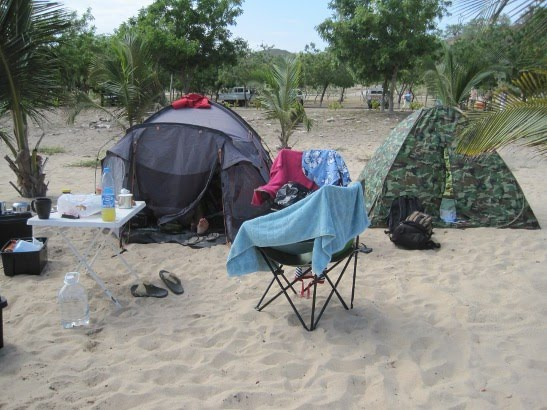
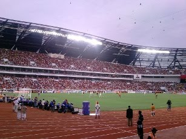
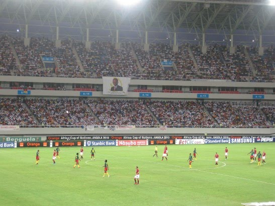

Kizua Mwangola: Part 13: Aiwee!! Ta Doeeeer!!
Tuesday, January 26, 2010
That's how an Angolan song goes, and it seems to accurately represent the nation's feelings; translating it loosely it means "I'm in pain". We certainly are. It wasn't meant to end like this. And to make it worse, we saw it all unfolding live, minute by painful minute, at the 11th of September stadium in Camama.
But lets rewind it all back to the Friday. Two new photographers had joined our lovely guest house — a couple from Harlsden (of all places). While chatting over a few cucas they told us of their crazy plans: take their South-African bought car from Benguela to Luanda on the Saturday and drive back on the Monday, resting their heads only a few hours at some cheap hostel. This got Shahin's brain going. Perhaps we could join them? After a quick check, we concluded that all of our commitments could be postponed by a day or two — in fact, in a more general form, it can be said that there is no activity held in Angolan soil that is deemed to be so vital that cannot be postponed by a day or two. So we joined the quest. We tapped all our contacts for a living room in which to crash, but none was forthcoming so the only other option was to camp. At 120 km from Luanda, Cabo ledo was the destination of choice.
We set off a bit late in the day — midday or so — and had a more-or-less uneventful trip there, with a short stop at Sumbe. The roads from Benguela to Luanda are now in a decent state, so one can drive at full speed, making it a seven hour journey.
Cabo Ledo has changed a lot in three years. The dirt-track has been superseded by a sandy road, the two lonely bungalows now have mushroomed into ten or so and — even more surprisingly — there is a whole new resort at the very end of the beach. This was a luxury place, with rooms going for 300 USD a night. They didn't have any camping area, but the chap there was very nice and allowed us to camp for a negligible price.

Figure 1: Camp at Cabo Ledo. (c) Shahinara Craveiro
The evening and morning were great, very much like a proper beach outing. We left early for Luanda, as the photographers need to start work quite early on. In addition, cousin Rui fought hard to secure a couple of last minute tickets for us, and the plan was to meet him at the stadium for delivery. He deliver the goods, and did so in proper Angolan fashion, arriving at around 15 minutes before the game. In Benguela this would have meant losing the first 20 minutes or so of the match; surprisingly, in Luanda — amongst a 50-thousand crowd — we still got in before the game had started. I was amazed. Unfortunately, I was also quite pissed off too as they forced me to bin my newly bought bolos secos (dried cakes). Apparently these can be quite lethal. No cameras allowed inside either.
What can I say about the game. I thought that we played well overall, and other than not scoring, we did everything best we could. One defensive mistake produced one goal; to make just one mistake in 90 minutes is quite good for us. Manucho and Flavio let us down, the first by not scoring any of the many opportunities he had and the second by not creating any for himself. The crowd tried their best. We even sang Angolan songs:
Nossa Angola, Ole, Ole
Nossa Angola Ole, Ole
But it was all in vain.

Figure 2: Angola v Ghana. (c) Shahinara Craveiro
The post-match was quite good though. There were hamburger vans selling beers at the parking lot, with TVs showing the Ivory Coast v Algeria game and selling cold'ish beer. In fact, beers and drinking have been handled quite well by the authorities. I was expecting a stadium full of drunken Angolans on all matches — lord knows we love our cuca — but instead I didn't see a single drunken spectator. Police was quite strict and didn't allow the selling or consumption of alcohol until the end of the game, an arrangement which proved to work well.
Afterwards, we drove back to Cabo Ledo in the dead of night — with a few scary near misses. Driving in Angola at night is not recommended for the faint at heart. In keeping with the depressed Angolan spirit, the night was dreadful, with rain and thunderstorms. To make it all worse, our 25 USD-chinese-shop tent had a leak and we got soaked and blasted by sand. And to top it all off, it was still quite rainy in the morning, so I couldn't even go for a swim before heading back to Benguela.
The road back was again uneventful. We got to Benguela just in time to watch the Egypt v Cameroon live in Ombaka. And so it was that three of my teams are now out of the African Cup: Angola, Ivory Coast and Cameroon. Like one fan said, "who shall we support now? Ghana?".

Figure 3: Egypt v Cameroon. (c) Shahinara Craveiro
Go on Zambia! Ow no, they lost too. Maybe its me?
| Back to previous chapter | Back to chapter index. | Forward to next chapter |